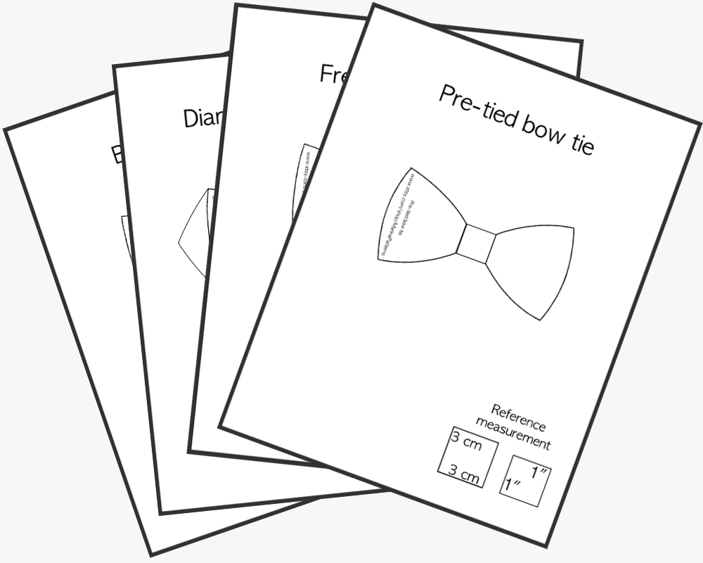
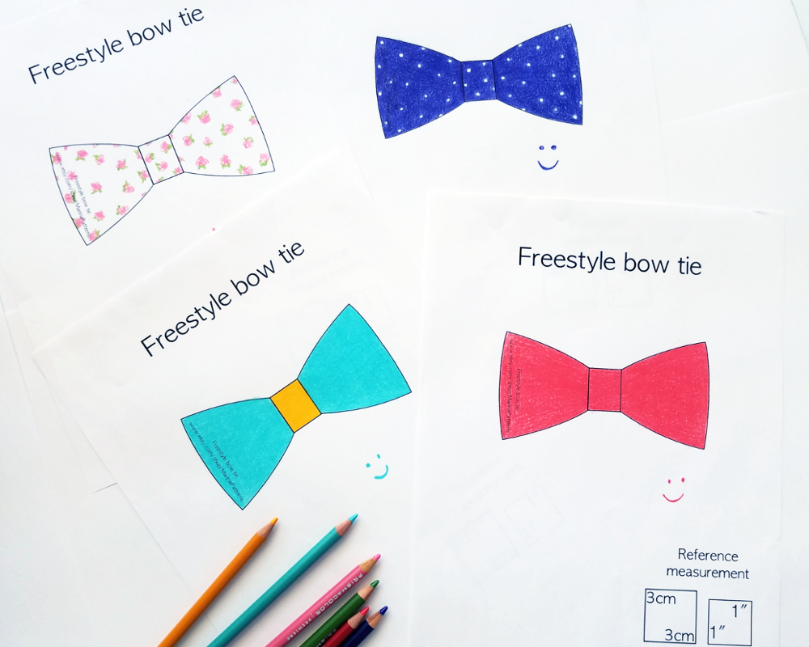
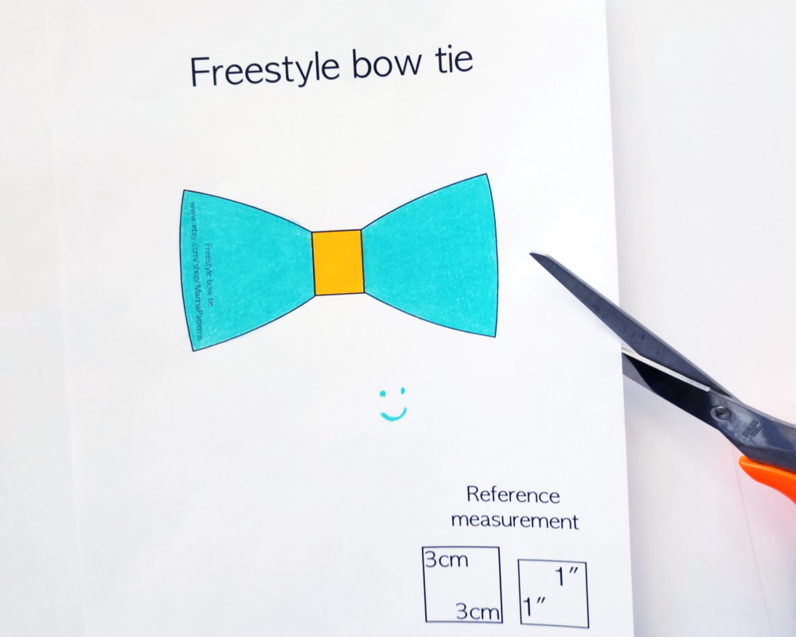
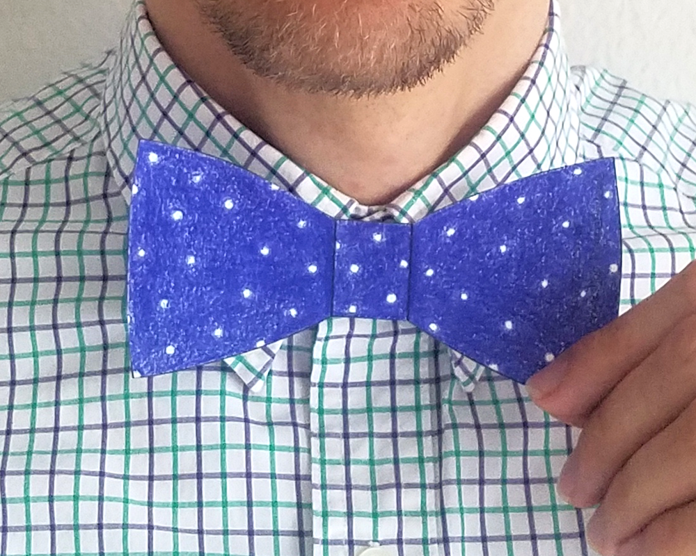

Воспользуйтесь бесплатными пробными макетами!
Классический вариант бабочки. Подходит для любых официальных и неофициальных мероприятий. Бабочку нужно завязывать самим.
DownloadPerfect for those that want something unique while still adhereing to a strict black tie dress code. Заостренные концы бабочки напоминают форму бриллианта. Ее также нужно завязывать самим.
DownloadИдеально подойдет для крупных людей с широкой шеей и овалом лица, но и для людей со «средними» параметрами также может вполне подойти. Эта бабочка также завязывающаяся и Хороша для торжественных мероприятий и на каждый день.
DownloadБлагодаря тому, что эти бабочки завязаны заранее, их форма всегда идеальна и такой остается вседа, если правильно ее хранить. Also really popular with men who simply don’t know how to tie a bow tie и поэтому их не носят.
DownloadПосле нажатия на кнопку Download, в браузере откроется новое окно, где вы сможете бесплатно скачать образец для примерки. Скачайте понравившийся образец и распечатайте.
Для того, чтобы сделать процесс творческим, распечатайте несколько листов с изображением бабочки и раскрасьте их. Посмотрите в интернете наиболее популярные цвета и рисунки на ткани.
Вырежьте по контуру деталь бабочки. Предварительно проверьте масштаб изображения с помощью линейки и уголка в 1 in или 3 см на бумаге, чтобы убедиться в правильном масштабе.
Наденьте ту рубашку, с которой собираетесь носить бабочку и приложите бумажную бабочку. Посмотритесь в зеркало. Обратите внимание, подходит ли она к форме вашего лица и к воротнику.
Пример, как выглядят лекала
Thank you for visiting!